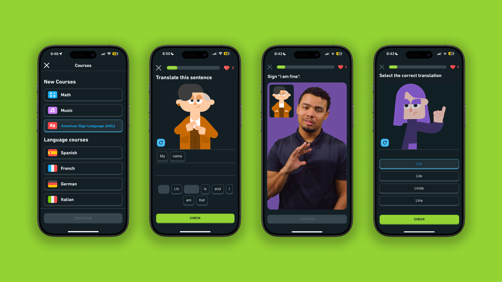
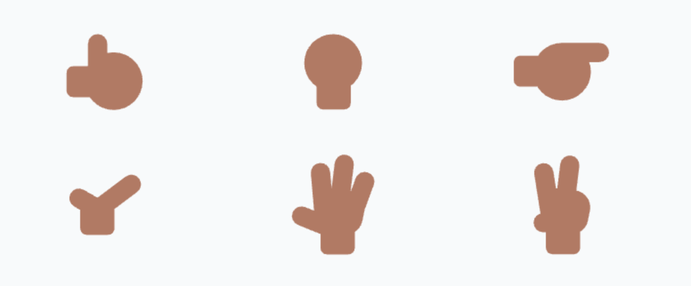

Deliverables
Concept Development
Product Design
Computational Logic
Prototype Production
Tech Stack
Figma
Blender
Python
Euler Kinematics
Systems Logic
The Brief:
Duolingo dominates spoken-language learning, yet a massive blind spot remains: non-verbal languages. If universal accessibility is truly the mission, this audio-centric gap cannot stay ignored.
Duolingo ASL challenges the platform to expand beyond speech. 1.5B people worldwide
experiencing hearing loss and 430M with
disabling hearing loss, this isn’t edge-case
accessibility—it’s a global, untapped market.
The Goal:
To engineer a scalable framework for non-verbal linguistics within the Duolingo ecosystem, ensuring "universal accessibility" includes the billions currently excluded by audio-only models.
The solution
This project proves how non-verbal languages can live inside Duolingo’s ecosystem at scale. They have the tech power; I bring the pressure.

ASL belongs in the core of Duolingo—not on the edge.

While Duolingo leverages sophisticated tools like Rive and AI for character systems, the structural
requirements of ASL demand a specialized logic that is currently absent. I identified this technical
gap and developed a solution that maps ASL linguistics to their existing motion pipeline. This
project isn't just an exploration, it is a roadmap for executing high-fidelity, non-verbal language
learning at scale.

The Challenge: Designing for Constraint
Duolingo uses a highly reductive design language optimized for Rive and rapid animation. However,
ASL cannot function with the "3 or 4-finger" hands common in stylized animation (like The Simpsons
or Family Guy). ASL requires five-finger articulation for linguistic accuracy, which initially
seemed at odds with Duolingo's hyper-simplified character system.
The Realization: Engineering within Guidelines
I identified a critical directive in the Brand
Guidelines:
"If you need to show fingers, display the bare minimum needed for the
pose."

This "bare minimum" clause provided the technical freedom to introduce a five-finger rig. By proving
that five fingers were the functional minimum for ASL legibility, I was able to integrate a complex
skeletal system into a minimalist brand ecosystem without violating its core design principles.
The Solution: User-Centric Engineering
I iteratively refined the hand geometry to honor the brand’s visual identity while optimizing for
readability. By prioritizing anatomical clarity over decorative detail, I ensured each sign is
immediately decipherable for learners.
The Technical Execution: Bridging Design & Engineering
Rather than relying on manual animation, I engineered a functional system that translates raw text
into mechanical motion. By abstracting Blender’s rigging methods into a library of reusable,
logic-driven Python functions, I transformed a creative vision into a scalable technical asset.
Putting the engineering hat on
In my Duolingo ASL project, I leveraged Python to bridge the gap between creative design and
technical execution. Rather than relying on traditional animation techniques, I engineered a
functional system that translates raw text into mechanical motion. This required a deep dive into
Blender’s rigging methods, which I successfully abstracted into a set of reusable, logic-driven
functions.
Code Architecture
Automated Data Mapping
The ASL fingerspelling system utilizes a Python-driven automation pipeline to map linguistic
inputs to 3D skeletal transforms. Each character is assigned a unique set of XYZ Euler
rotation
constants, which the script uses to procedurally rig the character on the Blender timeline.
This
transforms raw text strings into a sequenced kinematic simulation without manual keyframing.
Conditional Movement & Patterns
To ensure phonetic accuracy, the script includes conditional logic handlers to manage
specific
ASL grammatical rules, such as "double-letter" repetition (e.g., "DD" or "LL"). When the
script
detects consecutive identical characters, it triggers a secondary animation function—a
programmed Y-axis oscillation or "bounce." This demonstrates the ability to translate
complex,
rule-based human movement into a functional algorithmic response.
System Initialization
To maintain the integrity of the 3D model, the script implements a Global Reset State
between
each character. This function clears the previous XYZ Euler data sets to prevent additive
rotation errors (where new data builds on top of the old, causing the rig to "break"). By
returning the skeletal structure to an idle "Zero Pose," the script ensures a clean baseline
for
every new linguistic input and creates a natural rhythmic pause between signs.
Results
High Social Validation
This Duolingo ASL concept generated a huge response on LinkedIn. Thousands of people expressing that
they want this to become a real feature.
8k+ reactions
149 reposts
243 comments
Reflections
Growth Opportunities
Design that moves the business forward
This project pushed me beyond UI and into actual business thinking. Inclusive design
isn’t just ethically important—done right, it creates revenue opportunities and
strengthens long-term retention.
Through this case study, I explored how Duolingo could add ASL as a sustainable new
learning track without disrupting the core experience.
Business + Empathy = Results
By combining community insights with thorough research, this project shows how a
carefully crafted creative brief can create lasting impact—not just a one-off idea.